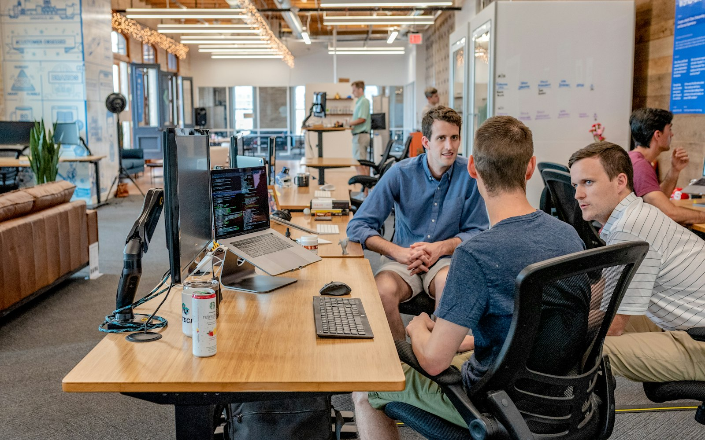

Completion is the single biggest predictor of whether an online course actually changes your career. Not the platform, not the video quality, not even the instructor — just whether you finish. Across EverLMS, learners who complete a course are roughly four times more likely to report a job change or promotion within a year than those who stop partway through.
So why do so many learners stall? In our own completion data, the drop-off is sharpest between lesson three and lesson eight — right when the initial motivation fades and the material starts asking for real practice, not just watching. The good news is that finishing is a system problem, not a willpower problem. Here is what actually works.
1. Schedule the lesson, not "someday"
Learners who block a fixed 25 to 40 minute slot on their calendar, three to five times a week, finish at more than double the rate of learners who plan to "find time." Treat the slot like a meeting you cannot move. Consistency beats intensity: four short sessions a week outperform one long weekend binge almost every time.
2. Make the next step embarrassingly small
If today's plan is "finish Section 3," you have set yourself up to skip it on a busy day. If today's plan is "watch one 8-minute lesson," you will almost always do it — and momentum tends to carry you further once you start. Your EverLMS dashboard already breaks every course into lesson-sized next actions for exactly this reason.
"I stopped trying to finish courses in a weekend. Fifteen minutes a day, five days a week, and I finished the React bootcamp in six weeks without ever feeling behind." — a learner in our completion survey
3. Build in accountability
Public commitment works. Tell a friend, post your streak, or join a study group in the forum. Learners who post at least one update in the community forum are significantly more likely to complete their course — the social pressure of a visible streak is a stronger motivator than most people expect.

4. Review weekly, not just at the end
Set aside ten minutes every Sunday to look back at what you covered and re-do one quiz question you got wrong. Spaced review is what moves material from "recognised" to "recalled" — and it is the difference between passing the final quiz and actually being able to use what you learned on the job.
5. Plan for the dip
Every course has a section that feels harder or less interesting than the rest. Knowing that in advance means you will not mistake a temporarily hard week for a sign to quit. If you hit a wall, drop to your smallest possible next action — even five minutes of review — rather than skipping the day entirely.
None of this requires more discipline than you already have. It requires a smaller unit of progress, a fixed slot on the calendar, and a way to notice you are still moving. Pick one course, apply these five habits for two weeks, and see what changes.